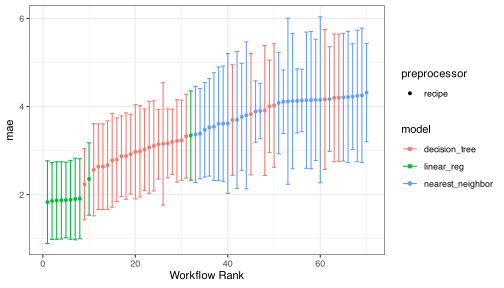
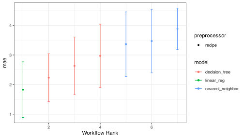

The goal of workflowsets is to allow users to create and easily fit a large number of models. workflowsets can create a workflow set that holds multiple workflow objects. These objects can be created by crossing all combinations of preprocessors (e.g., formula, recipe, etc) and model specifications. This set can be easier tuned or resampled using a set of simple commands.
Installation
You can install the released version of workflowsets from CRAN with:
install.packages("workflowsets")And the development version from GitHub with:
install.packages("pak")
pak::pak("tidymodels/workflowsets")Example
It is often a good idea to try different types of models and preprocessing methods on a specific data set. tidymodels provides tools for this purpose: recipes for preprocessing/feature engineering and model specifications. workflowsets has functions for creating and evaluating combinations of modeling elements.
For example, the Chicago train ridership data has many numeric predictors that are highly correlated. There are a few approaches to compensating for this issue during modeling:
Use a feature filter to remove redundant predictors.
Apply principal component analysis to decorrelate the data.
Use a regularized model to make the estimation process insensitive to correlated predictors.
The first two methods can be used with any model while the last option is only available for specific models. Let’s create a basic recipe that we will build on:
library(tidymodels)
library(workflowsets)
data(Chicago)
# Use a small sample to keep file sizes down:
Chicago <- Chicago %>% slice(1:365)
base_recipe <-
recipe(ridership ~ ., data = Chicago) %>%
# create date features
step_date(date) %>%
step_holiday(date) %>%
# remove date from the list of predictors
update_role(date, new_role = "id") %>%
# create dummy variables from factor columns
step_dummy(all_nominal()) %>%
# remove any columns with a single unique value
step_zv(all_predictors()) %>%
step_normalize(all_predictors())To enact a correlation filter, an additional step is used:
filter_rec <-
base_recipe %>%
step_corr(all_of(stations), threshold = tune())Similarly, for PCA:
pca_rec <-
base_recipe %>%
step_pca(all_of(stations), num_comp = tune()) %>%
step_normalize(all_predictors())We might want to assess a few different models, including a regularized method (glmnet):
regularized_spec <-
linear_reg(penalty = tune(), mixture = tune()) %>%
set_engine("glmnet")
cart_spec <-
decision_tree(cost_complexity = tune(), min_n = tune()) %>%
set_engine("rpart") %>%
set_mode("regression")
knn_spec <-
nearest_neighbor(neighbors = tune(), weight_func = tune()) %>%
set_engine("kknn") %>%
set_mode("regression")Rather than creating all 9 combinations of these preprocessors and models, we can create a workflow set:
chi_models <-
workflow_set(
preproc = list(simple = base_recipe, filter = filter_rec,
pca = pca_rec),
models = list(glmnet = regularized_spec, cart = cart_spec,
knn = knn_spec),
cross = TRUE
)
chi_models
#> # A workflow set/tibble: 9 x 4
#> wflow_id info option result
#> <chr> <list> <list> <list>
#> 1 simple_glmnet <tibble[,4] [1 × 4]> <opts[0]> <list [0]>
#> 2 simple_cart <tibble[,4] [1 × 4]> <opts[0]> <list [0]>
#> 3 simple_knn <tibble[,4] [1 × 4]> <opts[0]> <list [0]>
#> 4 filter_glmnet <tibble[,4] [1 × 4]> <opts[0]> <list [0]>
#> 5 filter_cart <tibble[,4] [1 × 4]> <opts[0]> <list [0]>
#> 6 filter_knn <tibble[,4] [1 × 4]> <opts[0]> <list [0]>
#> 7 pca_glmnet <tibble[,4] [1 × 4]> <opts[0]> <list [0]>
#> 8 pca_cart <tibble[,4] [1 × 4]> <opts[0]> <list [0]>
#> 9 pca_knn <tibble[,4] [1 × 4]> <opts[0]> <list [0]>It doesn’t make sense to use PCA or a filter with a glmnet model. We can remove these easily:
chi_models <-
chi_models %>%
anti_join(tibble(wflow_id = c("pca_glmnet", "filter_glmnet")),
by = "wflow_id")These models all have tuning parameters. To resolve these, we’ll need a resampling set. In this case, a time-series resampling method is used:
splits <-
sliding_period(
Chicago,
date,
"day",
lookback = 300, # Each resample has 300 days for modeling
assess_stop = 7, # One week for performance assessment
step = 7 # Ensure non-overlapping weeks for assessment
)
splits
#> # Sliding period resampling
#> # A tibble: 9 x 2
#> splits id
#> <list> <chr>
#> 1 <split [301/7]> Slice1
#> 2 <split [301/7]> Slice2
#> 3 <split [301/7]> Slice3
#> 4 <split [301/7]> Slice4
#> 5 <split [301/7]> Slice5
#> 6 <split [301/7]> Slice6
#> 7 <split [301/7]> Slice7
#> 8 <split [301/7]> Slice8
#> 9 <split [301/7]> Slice9We’ll use simple grid search for these models by running workflow_map(). This will execute a resampling or tuning function over the workflows in the workflow column:
set.seed(123)
chi_models <-
chi_models %>%
# The first argument is a function name from the {{tune}} package
# such as `tune_grid()`, `fit_resamples()`, etc.
workflow_map("tune_grid", resamples = splits, grid = 10,
metrics = metric_set(mae), verbose = TRUE)
#> i 1 of 7 tuning: simple_glmnet
#> ✓ 1 of 7 tuning: simple_glmnet (25.4s)
#> i 2 of 7 tuning: simple_cart
#> ✓ 2 of 7 tuning: simple_cart (27s)
#> i 3 of 7 tuning: simple_knn
#> ✓ 3 of 7 tuning: simple_knn (26.7s)
#> i 4 of 7 tuning: filter_cart
#> ✓ 4 of 7 tuning: filter_cart (42.1s)
#> i 5 of 7 tuning: filter_knn
#> ✓ 5 of 7 tuning: filter_knn (41.8s)
#> i 6 of 7 tuning: pca_cart
#> ✓ 6 of 7 tuning: pca_cart (33s)
#> i 7 of 7 tuning: pca_knn
#> ✓ 7 of 7 tuning: pca_knn (33s)
chi_models
#> # A workflow set/tibble: 7 x 4
#> wflow_id info option result
#> <chr> <list> <list> <list>
#> 1 simple_glmnet <tibble[,4] [1 × 4]> <opts[3]> <tune[+]>
#> 2 simple_cart <tibble[,4] [1 × 4]> <opts[3]> <tune[+]>
#> 3 simple_knn <tibble[,4] [1 × 4]> <opts[3]> <tune[+]>
#> 4 filter_cart <tibble[,4] [1 × 4]> <opts[3]> <tune[+]>
#> 5 filter_knn <tibble[,4] [1 × 4]> <opts[3]> <tune[+]>
#> 6 pca_cart <tibble[,4] [1 × 4]> <opts[3]> <tune[+]>
#> 7 pca_knn <tibble[,4] [1 × 4]> <opts[3]> <tune[+]>The results column contains the results of each call to tune_grid() for the workflows.
The autoplot() method shows the rankings of the workflows:
autoplot(chi_models)
or the best from each workflow:
autoplot(chi_models, select_best = TRUE)
We can determine how well each combination did by looking at the best results per workflow:
rank_results(chi_models, rank_metric = "mae", select_best = TRUE) %>%
select(rank, mean, model, wflow_id, .config)
#> # A tibble: 7 x 5
#> rank mean model wflow_id .config
#> <int> <dbl> <chr> <chr> <chr>
#> 1 1 1.85 linear_reg simple_glmnet Preprocessor1_Model07
#> 2 2 2.18 decision_tree simple_cart Preprocessor1_Model09
#> 3 3 2.95 decision_tree filter_cart Preprocessor07_Model1
#> 4 4 3.00 decision_tree pca_cart Preprocessor3_Model2
#> 5 5 3.34 nearest_neighbor simple_knn Preprocessor1_Model05
#> 6 6 3.50 nearest_neighbor filter_knn Preprocessor07_Model1
#> 7 7 3.81 nearest_neighbor pca_knn Preprocessor4_Model1Contributing
This project is released with a Contributor Code of Conduct. By contributing to this project, you agree to abide by its terms.
For questions and discussions about tidymodels packages, modeling, and machine learning, please post on RStudio Community.
If you think you have encountered a bug, please submit an issue.
Either way, learn how to create and share a reprex (a minimal, reproducible example), to clearly communicate about your code.
Check out further details on contributing guidelines for tidymodels packages and how to get help.